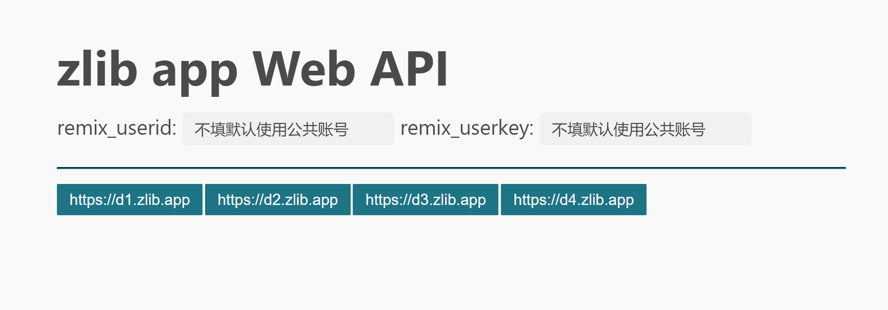

请使用以下链接进行搜索（恕不赘述）：
搜索完成之后，点击下载，将跳转到d.zlib.app，如下图所示。

对于已有账号且已经获取相关信息的用户，可以填写上方内容以使用自己的账号。若不填写默认使用公共账号。下方按钮均为下载服务器，多服务器可选。
在 z-library 主网站被封之后，z-library 的安卓端 APP 仍能够正常使用。但国内用户，以及非安卓平台用户可能会感到不便。我们分析了 z-library 安卓安装包，得到了可用的 APP 接口，搭建了相应的中转服务，注册了一些公共账号，以方便更多人使用 z-library APP。
zlib.app 服务器本身不存储任何数据。所有内容均从 zlibrary 服务器实时获取并转发。
目前 z-library 也有很多“离线库”，这些离线库基本上来自于 PILIMI 之前的一个项目所保存的资源。故 2022 年 10 月之后新上传的内容可能会有缺失。本项目直接接入 APP 接口，为“在线库”，资源相对比较丰富，下载也是直接从 z-library 服务器获取。但同时，本项目也极大依赖于 APP 的稳定性。所以可能较为不稳定。 此外，如果您不提供自己的账号，则默认使用我们之前注册的公共账号。下载额度有限。而“离线库”没有下载额度限制。 Github 上原来有另外一个项目，也使用类似的方法，但最近停止服务了。可以将本项目作为原项目的替代。
从搜索网页获取所需要下载书籍的信息，例如，从 TOR 官网获取：http://bookszlibb74ugqojhzhg2a63w5i2atv5bqarulgczawnbmsb6s6qead.onion/book/11651373/1132ee；从 clibrary 获取：https://clibrary.top/book/3511911/f37da4
注意其中共同的特点：最后以 数字/字符串 的形式结尾。如 3511909/db1f53 或者 3511911/f37da4
然后，请访问 [替换成可用的服务器域名]/download/[替换成上一步的数字]/[替换成上一步的字符串] 即可
如果需要使用自己的额度，请使用 [替换成可用的服务器域名]/download/[替换成上一步的数字]/[替换成上一步的字符串]/[替换成remix_userid]/[替换成remix_userkey]